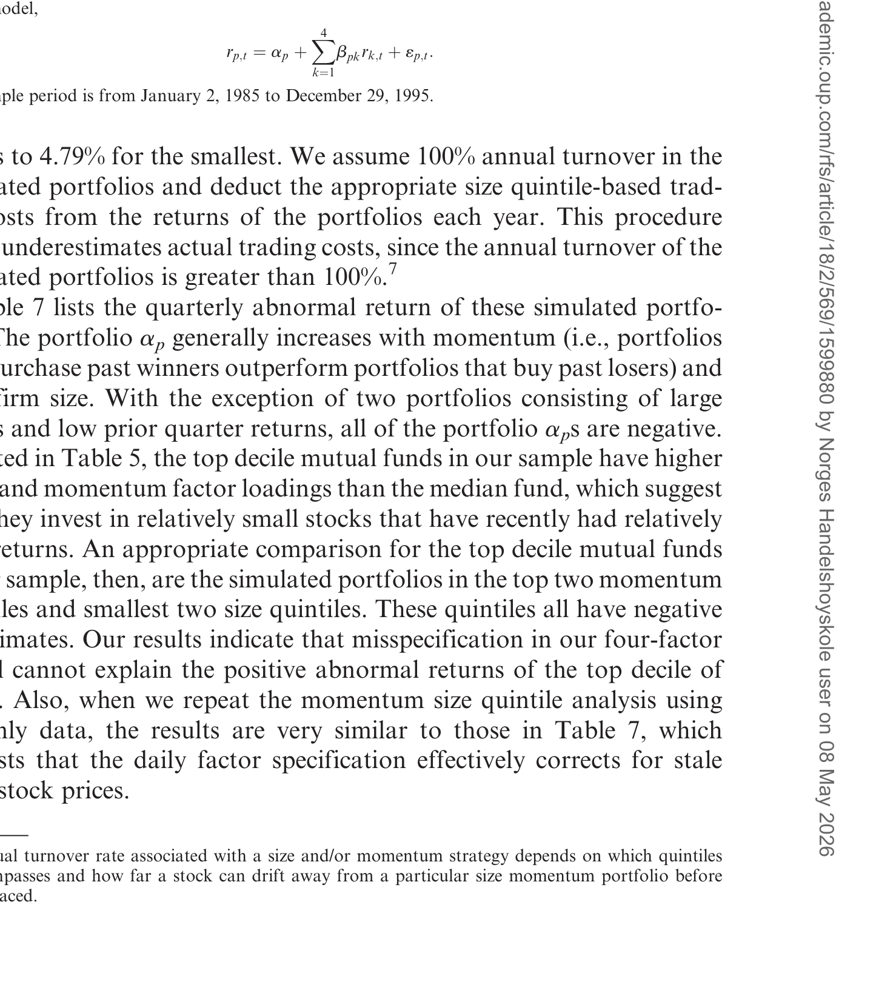
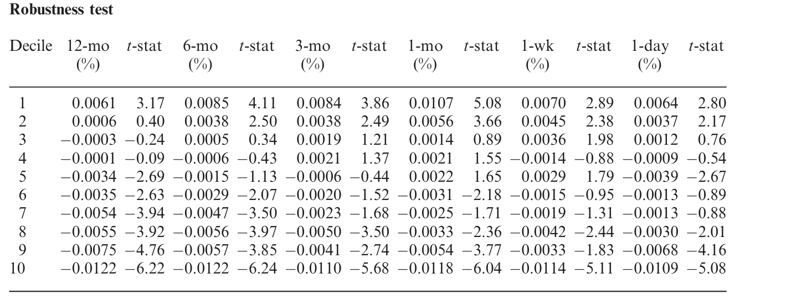
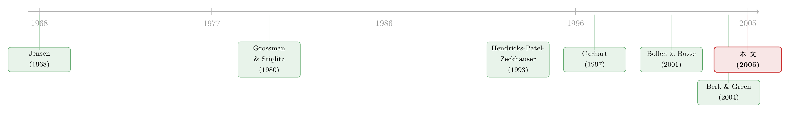

「手热」只有三个月：基金经理的本事，到底持续多久？
本文读的是 Bollen & Busse (2005, Review of Financial Studies)：作者用 230 只基金的日度收益、以季度为窗口估计 alpha，发现表现最好的那一组（顶组）在下一个季度仍能赚到约 39 个基点的超额收益——短期业绩持续性是真实存在的。但这点本事小到被交易成本和税收吃光；而且一旦把考察窗口从「季」拉长到「年」乃至「数十年」，它就凭空消失。结论因此颇为微妙：基金经理的本事是个「短命」的现象，只有当你一年体检它好几次时才看得见。
1 一个 2292 亿美元的假设
先讲一个数字。2000 年，美国共同基金的净新增现金流（net new cash flow）是 $229.2 billion——这个数字超过了当年全世界除 19 个国家之外所有国家的 GDP。钱往哪里去，自然有一整个产业替你出主意：晨星的星级、各路「选基指南」、铺天盖地的排行榜，全都建立在同一个朴素假设之上——有些基金经理是有真本事的，而且这本事会持续下去，于是聪明的投资者可以「看过去、押未来」。
可这个假设站得住脚吗？从学术的角度看，它其实是对有效市场假说（efficient market hypothesis）半强式的一次直接检验：如果基金经理的能力真的持续存在、可被预测，那半强式有效就该被否定。那均衡里我们究竟该期待什么？Grossman 和 Stiglitz (1980) 早就提醒过：价格不可能完全反映知情者的信息，否则没人愿意去付出代价搜集信息——所以总该有一些基金经理拥有信息优势。问题只是：这优势能维持多久？
这正是 Berk and Green (2004) 的理论锋芒所在：当投资者把资金源源不断地投向近期的赢家，赢家管理的规模越滚越大，边际收益被摊薄，信息优势注定是短命的。换句话说，本事也许真的有，但它会被资金流（fund flow）以惊人的速度稀释掉。
于是一个张力出现了。一边，Hendricks, Patel, and Zeckhauser (1993)、Goetzmann and Ibbotson (1994)、Grinblatt, Titman, and Wermers (1995) 等一大批研究在「一年」这样的窗口上找到了持续性，纷纷把它归因于经理的技能；另一边，Carhart (1997) 端来一盆冷水——他把 Jegadeesh and Titman (1993) 的动量（momentum）因子塞进收益模型后，所谓的持续性几乎荡然无存（只剩最差的那批基金因为费用高而「持续地差」）。Carhart 的言下之意很扎心：顶组基金的超额收益，不过是恰好持有了一批近期涨得好的股票，是运气，不是选股技能。
那么，到底谁对？
2 把尺子磨细：从「年」到「季」
接着，一个自然的问题是：会不会大家用错了尺子？
留意一个细节：几乎所有前人研究都用月度收益。而月度数据有个硬约束——要把一个因子模型估准，你需要足够长的时间序列，于是排名窗口最短也得是一年。可如果本事本来就是「短命」的（无论是因为 Berk-Green 说的资金流稀释，还是 Chevalier and Ellison (1999) 说的经理频繁更替），那么用一年的窗口去测量，等于把三个月就该兑现的本事硬生生平均掉了。粗尺子量不出细变化。
这就是本文方法论上的「核武」：作者改用日度共同基金收益。一个季度大约有 63 个交易日，足以把四因子模型估得相当精确——于是第一次，我们可以按季度给基金的风险调整后业绩排名，再看它在下一个季度的表现。月度数据做不到这件事，因为三个月只有三个观测值，回归根本估不动。
（关于「持续性会随考察期长短而变」这件事本身，可参见《「跑赢大盘」是会过期的：当一只基金的胜率，随着持有年限一年年缩水》。）
3 识别策略：用日度数据给每只基金做季度体检
本文不是因果推断式的自然实验，而是一套精心设计的「排名—持有」业绩检验。它的识别力量来自三处：日度数据带来的统计精度、风险调整模型的选择、以及横截面与时间双重平均。把它拆开来看：
第一，业绩怎么度量。 对选股能力，作者直接用 Carhart (1997) 四因子模型的截距 \(a_p\)：
$$r_{p,t} = a_p + \sum_{k=1}^{4} b_{pk}\, r_{k,t} + \varepsilon_{p,t}$$
其中四个因子是市场超额收益、Fama and French (1993) 的规模与账面市值比因子、以及 Carhart 的动量因子。注意这里特意把动量放进来——就是为了不把「单纯持有动量股」奖励成「选股技能」，直接回应 Carhart 的批评。此外，仿照 Dimson (1979)，作者还加入了四个因子的滞后项，用来吸收个股非同步交易（infrequent trading）对日度基金收益的影响。
第二，择时怎么度量。 对市场择时能力，作者用两个经典模型。Treynor and Mazuy (1966，下称 TM) 在回归里加了一个凸性项：
$$r_{p,t} = a_p + b_p\, r_{m,t} + \gamma_p\, r_{m,t}^2 + \varepsilon_{p,t}$$
如果经理能在市场上涨前加仓、下跌前减仓，组合收益就会是市场收益的凸函数，\(\gamma_p > 0\)。Henriksson and Merton (1981，下称 HM) 则让 beta 在两个水平间切换：
$$r_{p,t} = a_p + b_p\, r_{m,t} + \gamma_p\, I_t\, r_{m,t} + \varepsilon_{p,t}$$
这里 \(I_t\) 是示性函数，市场超额收益为正时取 1、否则取 0；\(\gamma_p\) 可解读为经理择时活动带来的 beta 变化。两个模型同样都补上了四因子和滞后项。
第三，也是本文一个不易察觉却重要的创新——允许经理「换打法」。 前人要么把所有人当选股者，要么把所有人当择时者。可如果有人本质是选股者、有人是择时者，甚至同一个人会在不同时间切换策略，那「一刀切」就会带来系统性的设定误差（misspecification）。于是作者做了一次混合排序（mixed sort）：用自助法（bootstrap）标准误判断每只基金某季的择时系数 \(\gamma_p\) 是否显著——显著就把它当择时者、用择时业绩衡量；不显著就当选股者、用 \(a_p\) 衡量。
择时者的综合业绩用下面这个量来度量，它把 alpha 和择时贡献揉进一个数：
其中 \(N\) 是该季度的交易日数。流程于是清晰了：每个季度（最后一季除外）按 \(a_p\)（选股）、按 \(r_{p,\gamma}\)（择时）、以及混合标准给基金排名，分成十个十分位组（decile），再记录每一组在下一个季度的表现。最后，作者沿用 Fama and MacBeth (1973) 的精神，把各季的结果在时间上平均——既跨基金、也跨时间。
这一点后面会变成全文的「机关」：本文是先一季一季地估、再把季度结果平均，而不是把所有后续收益拼接（concatenate）成一条长序列只估一次。两种做法在静态世界里等价，但当 beta 会随时间变化时，它们会给出截然不同的答案。
4 主要结果：顶组确实「手热」
那么，把尺子磨细之后，看见了什么？
排名季里，分化巨大。 顶组的选股日度异常收益是 0.0738%，底组是 −0.0828%——换算成季度（按 \((1+r)^{63}-1\)）分别是 +4.76% 和 −5.08%。当然，既然是按业绩排序，这种分化本身不稀奇，它只是给下一步提供一个参照。
真正的看点在持有季（post-ranking quarter）。 用选股模型，顶组在下一个季度的异常收益是 0.0061% 每天，在 1% 水平上显著，折合季度约 +0.39%；底组是 −0.0122% 每天，约 −0.77%。换成择时模型，顶组的数字落在 25–39 个基点的区间内。也就是说——
表现最好的那批基金，在你看不见的下一个季度，确实仍然在赚取统计上显著的超额收益。短期业绩持续性，真实存在。
还有一个耐人寻味的细节藏在日内的累计曲线里：顶组的超额收益主要在季度的前半段就赚完了（符合「本事是短命的」这一判断——越往后，信息优势越被磨平）；而底组的负收益则在整个季度里匀速下滑，这恰恰是「费用每天计提」留下的指纹。Carhart (1997) 当年也发现了同样的现象：最差的基金，持续地差，而且差得最稳定。
5 但这点本事，值钱吗？
到这里，故事似乎站在了「技能派」一边。然后，一个冷静的问题浮出水面：0.39% 一个季度，真的能装进口袋吗？
要捕获顶组的持续性，你得在每个季度末重新排名、把组合整体换一遍仓。一旦把交易成本与税收算进去，这点超额收益还剩多少？作者用模拟交易策略给出了答案：净额非常单薄。换句话说，统计上的显著，未必等于经济上的可获利——这是全文第一个降温。
如表 7 所示，复制顶组的策略在计入成本之后，超额收益被大幅侵蚀，所谓「持续性」在投资者真正能落袋的口径下变得相当可疑。

Table 7: lists the quarterly abnormal return of these simulated portfo-
这其实和 Berk-Green 的世界观一脉相承：哪怕本事是真的，竞争与摩擦也会让普通投资者很难把它变现。
6 反转：换成 Carhart 的拍法，持续性凭空消失
但真正关键、也最漂亮的一步，是作者主动去「对账」：既然我找到了持续性，而 Carhart (1997) 没找到，那差别到底出在哪一个动作上？他们逐一模仿 Carhart 与自己不同的做法。
第一处差别：按什么排名。 Carhart 按过去一年的收益（或过去三年的 alpha）排名，本文按过去一季的 alpha 排名。当作者改成「按先前收益 \(R_p\) 排名」时，下一季的异常收益消失了。这说明两套排序其实挑出了不同的一批基金——按原始收益排，挑出的更像是「承担了更多风险」的人，而非「真有选股技能」的人。

Table 8: lists the results. In all cases, the top decile generates
第二处差别，也是更深刻的那处：怎么衡量持有期。 Carhart 把后续收益拼接成一条长达 31 年的序列，只估一次 alpha；本文则是一季一季地估、再做 Fama-MacBeth 平均。当作者也改用拼接序列时——你猜对了——顶组的异常收益又一次消失。
于是真正的谜题变成：为什么换个加总方式，结论就反转？作者把拼接序列上每个因子的季度收益、与顶组每季的平均因子载荷都记录下来，做了一次分解。结果发现：因子收益与对应因子载荷之间的协方差为负。
这句话翻译成直觉是这样的：顶组经理在短期里确实展现了选股与择时能力，但在更长的时间轴上，他们患上了一种「反常的因子择时（perverse factor timing）」——往往在某个因子即将表现不佳时，反而提高了对它的暴露。为什么？这与资金流文献严丝合缝：业绩好 → 资金涌入 → 规模被动膨胀、被迫在高位接盘 → 在拼接的长序列里，这种「在错误的时点放大暴露」就表现为负的协方差，把短期赚到的 alpha 一点点抵消干净。把许多个短季度的本事，硬拼成一条长序列，正好把这股反向的力量累加了出来。
这也解释了一个长期的实证困惑：为什么文献里基金的市场择时系数常常是负的。不是经理们集体逆向操作，而是「业绩—资金流」的正反馈，在长序列估计里制造了负的择时估计。（关于 beta 与 alpha 随时间漂移如何系统性地扭曲业绩度量，可参见《会动的 beta：基金经理的「择时本事」，是真的，还是统计模型替他造出来的？》。）
至此，全文的核心被讲透了：基金经理的本事不是「有」或「没有」的二元问题，而是一个时间尺度问题。 在三个月的窗口里，它清晰可辨；把窗口拉长，它先被资金流稀释、再被反常的因子择时抵消，最终在数十年的拼接序列里归零。Carhart 没说错，本文也没说错——他们只是站在了不同长度的尺子两端。
7 文献脉络
把这条线索捋一遍，能看清本文站在哪里。
最早，Jensen (1968, 1969) 给基金业绩立下了「用因子模型截距衡量 alpha」的范式，结论偏悲观——经理平均跑输。随后 Grossman and Stiglitz (1980) 从理论上指出，均衡里必须给信息搜集留出回报，于是「总有一些经理有本事」成了可期待的事。

进入九十年代，持续性研究井喷：Hendricks, Patel, and Zeckhauser (1993) 的「热手（hot hands）」、Goetzmann and Ibbotson (1994)、Grinblatt, Titman, and Wermers (1995) 等都在一年左右的窗口上找到了持续性。转折点是 Jegadeesh and Titman (1993) 的动量与 Carhart (1997)：后者把动量因子一加，持续性几乎被解释殆尽，把功劳从「技能」改判给了「运气 + 动量」。
本文的两块基石分别来自方法与理论：方法上，作者自己的 Bollen and Busse (2001) 证明了日度数据能让择时检验重获统计势（power）；理论上，Berk and Green (2004) 给出了「本事必然短命」的均衡逻辑。本文正是把这两者合流——用日度数据做季度检验，去验证一个短期的持续性，并用资金流逻辑解释它为何在长期消失。它既是对 Carhart 的「部分平反」，也是对它的「精确定位」。
8 评论与延伸（Q&A + 研究方向）
(a) 几个可能的疑问
Q：39 个基点的「短期持续性」，和 Carhart 说的「没有持续性」，到底矛盾不矛盾？
不矛盾，它们量的是不同尺度。本文按季度估、再平均，捕到的是一个短命的本事；Carhart 按年排名、拼接成长序列，把这点本事先稀释、再被反常因子择时抵消，自然归零。本文最漂亮之处，正是亲手复现了「换成 Carhart 的拍法，持续性就消失」这一步。
Q：日度数据是不是「作弊」——会不会只是非同步交易制造的虚假 alpha？
这正是作者用 Dimson (1979) 滞后因子项要堵的漏洞。个股非同步交易会让日度基金收益对因子的反应「慢半拍」，不加滞后项就可能把它误读成 alpha。加了滞后项之后，仍有显著的顶组持续性，说明结论不是这个机制单独撑起来的。
Q：既然统计上显著，为什么说它经济意义存疑？
因为要落袋这
0.39%，你得每季末重新排名换仓，交易成本和税收会把它大部分吃掉（表 7）。这与 Berk-Green 的世界一致：本事可以是真的，但摩擦让普通投资者很难把它变现。
Q：为什么底组的「持续地差」比顶组的「持续地好」更稳健？
因为底组的负收益主要由高费用驱动，而费用是每天计提、几乎确定性地累积的——日内累计曲线里底组匀速下滑，正是这个指纹。技能会被竞争磨平，费用却不会自己消失。
Q：「反常的因子择时」是经理水平差吗？
不必然。它更像是「业绩好→资金涌入→被迫在高位放大暴露」的被动结果，是资金流的正反馈在长序列估计里留下的负协方差，而非经理主动逆向操作。这也顺带解释了文献里择时系数常为负的老现象。
Q：混合排序（允许经理在选股/择时间切换）真的重要吗？
它处理的是一个真实的设定误差：把择时者当选股者衡量、或反之，都会低估其业绩。允许切换让排序更少受「打法错配」的污染，是本文相对前人的一个细致改进，虽然它不改变核心结论的方向。
(b) 几个可能的研究问题与提案
1. 把这套「日度—季度」尺子搬到公司债基金上。 - 【经济故事】公司债流动性差、报价不连续，月度业绩里混入了大量流动性噪声；如果信用债经理的本事同样是「短命」的，日度（或可成交价）口径下的季度检验可能揭示出被月度数据掩盖的短期持续性。 - 【可行性】中。需要 TRACE 逐笔成交构造日度基金收益的代理，识别上要小心非同步交易与陈旧报价——比股票基金更棘手，但正因如此更有价值。
2. 用资金流直接检验「短期持续性被稀释」的机制。 - 【经济故事】Berk-Green 预测：本事的衰减速度应与资金流入速度正相关。可以把顶组按「排名后资金流入强度」再分组，看资金流入越猛的子组，持续性是否衰减越快。 - 【可行性】高。基金资金流数据（如 CRSP MF、ICI）齐备，识别策略清晰，是一个直接、干净的检验。
3. 外资持有人与基金本事的「可变现性」。 - 【经济故事】若某市场的外资持有比例上升带来更多套利资本，顶组的短期 alpha 是否被更快地竞争掉？这是把本文的「摩擦让本事难变现」延伸到外资渠道。 - 【可行性】中。需要跨国基金业绩 + 外资持股（如可投资度指标）面板，识别上可借助指数纳入等外生事件。
4. 把「反常因子择时」拆成主动 vs. 被动两部分。 - 【经济故事】负的因子载荷—收益协方差，究竟多少来自经理主动调仓、多少来自资金流被动推动？拆开它能区分「能力缺陷」与「规模诅咒」。 - 【可行性】中。需要基金持仓（如 Thomson Reuters holdings）逐季数据，把载荷变化分解为主动交易与流入摊薄两块。
我的判断
本文最大的贡献，是把一场争论了十年的「有没有持续性」之争，重新表述成了一个时间尺度问题——并用日度数据这把更细的尺子，给出了一个能同时容纳 Carhart 和「技能派」的解释。尤其那一步「逐项模仿 Carhart、看持续性如何随做法消失」的对账，干净得近乎优雅，是方法论自觉的典范。
对识别，我有两点保留。其一，结论高度依赖模型设定——四因子（加滞后项）若漏掉了某个真实定价因子，顶组的 alpha 仍可能是补偿而非技能；本文比前人稳健，但无法完全排除。其二，样本是 1985–1995、230 只基金，不含期间新成立的基金（虽避开了幸存者偏差的一种，却引入了另一种选择）；放到今天指数化与费率战的环境里，那 39 个基点是否还在，值得用现代数据重估。
我最想看到的后续，是把这套日度—季度框架接到资金流的机制检验上：如果能直接证明「资金流入越快、短期本事衰减越快」，那 Berk-Green 这条理论暗线就不只是事后的解释，而成了可被证伪的预测。这也正是把「业绩持续性」从一个度量问题，推进成一个真正的经济学问题的方向。
参考文献
- Berk, J., and R. Green (2004). Mutual Fund Flows and Performance in Rational Markets. Journal of Political Economy (forthcoming).
- Bollen, N., and J. Busse (2001). On the Timing Ability of Mutual Fund Managers. Journal of Finance 56, 1075–1094.
- Bollen, N. P. B., and J. A. Busse (2005). Short-Term Persistence in Mutual Fund Performance. Review of Financial Studies 18(2), 569–597.
- Carhart, M. (1997). On Persistence in Mutual Fund Performance. Journal of Finance 52, 57–82.
- Chevalier, J., and G. Ellison (1999). Career Concerns of Mutual Fund Managers. Quarterly Journal of Economics 114, 389–432.
- Dimson, E. (1979). Risk Measurement When Shares are Subject to Infrequent Trading. Journal of Financial Economics 7, 197–226.
- Fama, E., and K. French (1993). Common Risk Factors in the Returns on Stocks and Bonds. Journal of Financial Economics 33, 3–56.
- Fama, E., and J. MacBeth (1973). Risk, Return, and Equilibrium: Empirical Tests. Journal of Political Economy 81, 607–636.
- Goetzmann, W., and R. Ibbotson (1994). Do Winners Repeat? Patterns in Mutual Fund Performance. Journal of Portfolio Management 20, 9–18.
- Grinblatt, M., S. Titman, and R. Wermers (1995). Momentum Investing Strategies, Portfolio Performance, and Herding: A Study of Mutual Fund Behavior. American Economic Review 85, 1088–1105.
- Grossman, S., and J. Stiglitz (1980). On the Impossibility of Informationally Efficient Markets. American Economic Review 70, 393–408.
- Hendricks, D., J. Patel, and R. Zeckhauser (1993). Hot Hands in Mutual Funds: Short-Run Persistence of Performance, 1974–1988. Journal of Finance 48, 93–130.
- Henriksson, R. (1984). Market Timing and Mutual Fund Performance: An Empirical Investigation. Journal of Business 57, 73–97.
- Henriksson, R., and R. Merton (1981). On Market Timing and Investment Performance. II. Journal of Business 54, 513–533.
- Jegadeesh, N., and S. Titman (1993). Returns to Buying Winners and Selling Losers: Implications for Stock Market Efficiency. Journal of Finance 48, 65–91.
- Jensen, M. (1968). The Performance of Mutual Funds in the Period 1945–1964. Journal of Finance 23, 389–416.
- Jensen, M. (1969). Risk, the Pricing of Capital Assets, and the Evaluation of Investment Portfolios. Journal of Business 42, 167–247.
- Treynor, J., and K. Mazuy (1966). Can Mutual Funds Outguess the Market? Harvard Business Review 44, 131–136.